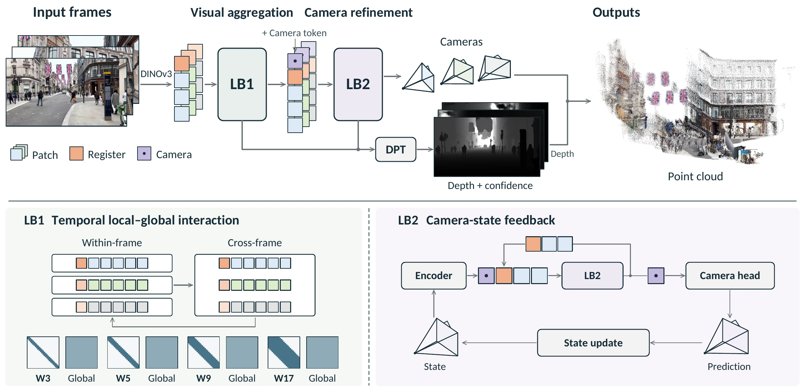

Video geometry
LoFT
Looped Foundation Transformer for Video Geometry
- Paper
- Code
- Hugging Face
Reconstructing 3D scenes from RGB video through temporal attention and iterative camera refinement.

Abstract
3D reconstruction has seen profound changes in data scaling and model iteration, and recent models have shown significant gains in both reconstruction accuracy and generalization. We focus on video reconstruction because a large proportion of real-world visual data, particularly data from dynamic scenes, takes the form of continuous video. We propose LoFT, a transformer with a two-loop architecture. The first loop aggregates visual features over progressively wider temporal windows, alternating these local steps with attention over the full clip to exploit the temporal continuity prior. The second loop predicts a camera pose for each frame and explicitly feeds the updated camera state back into the next feature update. Each loop reuses its own weights across iterations, allowing a single model to run at different refinement depths.
We train LoFT on a mixture of 80 public datasets. On the public reconstruction benchmark SpatialBench and two benchmarks we curated from both public and self-collected data (ClassicBench and VRBench), LoFT achieves competitive results in both depth and camera pose estimation. We keep the model design and training pipeline as simple as possible to support a wider range of downstream extensions and preserve LoFT’s potential to learn general-purpose video representations.
- Model parameters
- 514.5M
- Training datasets
- 80
- Sequences
- 2.97M
- Images
- 961.8M
Method
Two loops for video geometry.


Visual aggregation
Local attention expands from 3 to 5, 9, and 17 frames. Between these local steps, every frame attends to the full clip, including distant views of the same place.
Camera refinement
Each iteration predicts pose and field of view, then feeds the updated camera state into the next iteration. A dense head decodes depth and confidence once per frame.
Results
Reconstruction benchmarks.
- SpatialBench Medium
- The Full split contains 129 sequences. The Continuous subset uses the 98 sequences with uninterrupted observations to evaluate reconstruction from continuous video.
- ClassicBench
- We compare reconstruction accuracy across seven established datasets, including 7-Scenes, Neural RGB-D, Bonn, TUM Dynamic, Sintel, DyCheck, and KITTI.
- VRBench
- The Video Reconstruction Benchmark combines 12 public datasets with two we collected. It covers indoor and outdoor scenes, autonomous driving, and robotic manipulation.
Arrows indicate the better direction for each metric. AbsRel and δ1.03 measure depth, AUC measures relative camera pose, and ATE measures trajectory error. Bold marks the best ranked result in each column and underlining marks the second best. The public VGGT-Ω checkpoint is excluded from the rankings because its authors report potential data contamination.
| Method | SpatialBench Full | SpatialBench Continuous | ||||||||
|---|---|---|---|---|---|---|---|---|---|---|
| AbsRel ↓ | δ1.03 ↑ | AUC@3 ↑ | AUC@30 ↑ | ATE ↓ | AbsRel ↓ | δ1.03 ↑ | AUC@3 ↑ | AUC@30 ↑ | ATE ↓ | |
| MapAnything | 0.1450 | 0.3504 | 0.1964 | 0.6285 | 1.6331 | 0.1772 | 0.2854 | 0.1710 | 0.5808 | 1.8061 |
| VGGT | 0.1273 | 0.4968 | 0.3854 | 0.7066 | 0.6003 | 0.1552 | 0.4617 | 0.3776 | 0.6806 | 0.4108 |
| 4RC | 0.0875 | 0.6130 | 0.4242 | 0.7570 | 0.9581 | 0.1073 | 0.5494 | 0.3696 | 0.7207 | 0.8225 |
| π3 | 0.0843 | 0.5692 | 0.3969 | 0.7759 | 0.6019 | 0.1019 | 0.5217 | 0.3591 | 0.7538 | 0.3680 |
| DA3-Giant | 0.0851 | 0.5865 | 0.4866 | 0.7978 | 0.8733 | 0.1033 | 0.5359 | 0.4328 | 0.7670 | 0.7690 |
| DVLT | 0.1184 | 0.5674 | 0.4716 | 0.8158 | 0.4011 | 0.1452 | 0.5200 | 0.4587 | 0.7930 | 0.1987 |
| Solv3R | 0.1240 | 0.5542 | 0.4901 | 0.8118 | 0.4742 | 0.1523 | 0.5031 | 0.4798 | 0.7890 | 0.2106 |
| Retrained VGGT-Ω | 0.0936 | 0.6197 | 0.5082 | 0.8254 | 0.4483 | 0.1136 | 0.5722 | 0.4738 | 0.8079 | 0.2305 |
| Public VGGT-Ω | 0.0661 | 0.6272 | 0.4894 | 0.8208 | 0.5513 | 0.0779 | 0.5802 | 0.4552 | 0.8001 | 0.2291 |
| Ours (LoFT) | 0.0637 | 0.6959 | 0.4767 | 0.8341 | 0.5041 | 0.0734 | 0.6765 | 0.4757 | 0.8342 | 0.2131 |
| Method | ClassicBench | VRBench | ||||||||
|---|---|---|---|---|---|---|---|---|---|---|
| AbsRel ↓ | δ1.03 ↑ | AUC@3 ↑ | AUC@30 ↑ | ATE ↓ | AbsRel ↓ | δ1.03 ↑ | AUC@3 ↑ | AUC@30 ↑ | ATE ↓ | |
| MapAnything | 0.1739 | 0.3522 | 0.1171 | 0.5539 | 3.7913 | 0.1421 | 0.3231 | 0.1141 | 0.5859 | 1.9336 |
| VGGT | 0.1713 | 0.3770 | 0.2300 | 0.6599 | 0.9471 | 0.1406 | 0.3848 | 0.2317 | 0.6970 | 0.7321 |
| 4RC | 0.1852 | 0.4532 | 0.2706 | 0.7004 | 1.3776 | 0.1157 | 0.4972 | 0.3546 | 0.7719 | 1.1361 |
| π3 | 0.1536 | 0.4856 | 0.2499 | 0.6795 | 1.0273 | 0.1012 | 0.4759 | 0.2851 | 0.7471 | 0.6573 |
| DA3-Giant | 0.1566 | 0.4690 | 0.2758 | 0.6999 | 0.8492 | 0.1093 | 0.4741 | 0.3393 | 0.7775 | 0.8503 |
| DVLT | 0.1599 | 0.4638 | 0.2877 | 0.7123 | 0.3381 | 0.1238 | 0.4514 | 0.3263 | 0.7936 | 0.2472 |
| Solv3R | 0.1520 | 0.4671 | 0.3100 | 0.7368 | 0.3203 | 0.1208 | 0.4435 | 0.3534 | 0.8055 | 0.2726 |
| Retrained VGGT-Ω | 0.1427 | 0.4930 | 0.3112 | 0.7397 | 0.4052 | 0.1069 | 0.4980 | 0.3793 | 0.8202 | 0.2786 |
| Public VGGT-Ω | 0.0910 | 0.6231 | 0.3576 | 0.7758 | 0.3066 | 0.0844 | 0.5337 | 0.3518 | 0.8093 | 0.2849 |
| Ours (LoFT) | 0.1316 | 0.5464 | 0.3506 | 0.7623 | 0.5015 | 0.0852 | 0.5751 | 0.3879 | 0.8271 | 0.2973 |
Demo